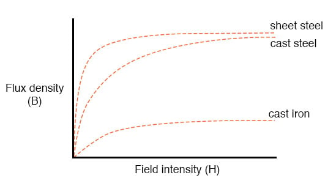
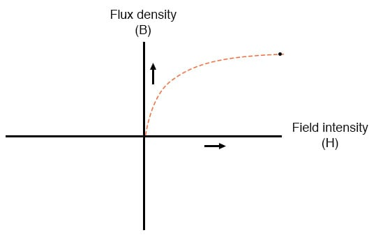
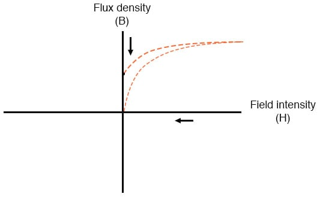
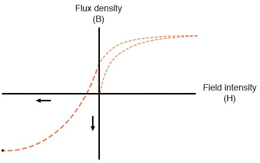
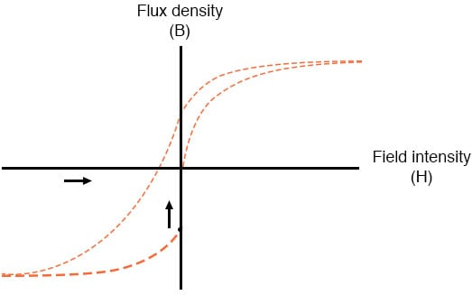
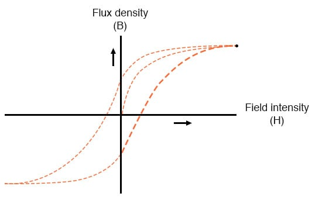
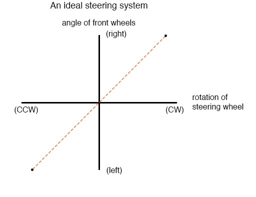
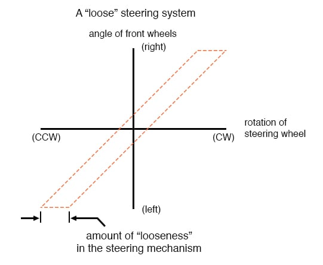
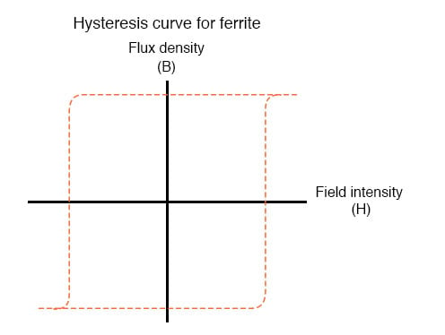

The nonlinearity of material permeability may be graphed for better understanding. We’ll place the quantity of field intensity (H), equal to field force (mmf) divided by the length of the material, on the horizontal axis of the graph. On the vertical axis, we’ll place the quantity of flux density (B), equal to total flux divided by the cross-sectional area of the material.
We will use the quantities of field intensity (H) and flux density (B) instead of field force (mmf) and total flux (Φ) so that the shape of our graph remains independent of the physical dimensions of our test material. What we’re trying to do here is show a mathematical relationship between field force and flux for any chunk of a particular substance, in the same spirit as describing a material’s specific resistance in ohm-cmil/ft instead of its actual resistance in ohms.

This is called the normal magnetization curve, or B-H curve, for any particular material. Notice how the flux density for any of the above materials (cast iron, cast steel, and sheet steel) levels off with increasing amounts of field intensity. This effect is known as saturation. When there is little applied magnetic force (low H), only a few atoms are in alignment, and the rest are easily aligned with additional force.
However, as more flux gets crammed into the same cross-sectional area of a ferromagnetic material, fewer atoms are available within that material to align their electrons with additional force, and so it takes more and more force (H) to get less and less “help” from the material in creating more flux density (B). To put this in economic terms, we’re seeing a case of diminishing returns (B) on our investment (H). Saturation is a phenomenon limited to iron-core electromagnets.
Air-core electromagnets don’t saturate, but on the other hand, they don’t produce nearly as much magnetic flux as a ferromagnetic core for the same number of wire turns and current.
Another quirk to confound our analysis of magnetic flux versus force is the phenomenon of magnetic hysteresis. As a general term, hysteresis means a lag between input and output in a system upon a change in direction. Anyone who’s ever driven an old automobile with “loose” steering knows what hysteresis is: to change from turning left to turning right (or vice versa), you have to rotate the steering wheel an additional amount to overcome the built-in “lag” in the mechanical linkage system between the steering wheel and the front wheels of the car.
In a magnetic system, hysteresis is seen in a ferromagnetic material that tends to stay magnetized after an applied field force has been removed (see “retentivity” in the first section of this chapter) if the force is reversed in polarity.
Let’s use the same graph again, only extending the axes to indicate both positive and negative quantities. First, we’ll apply an increasing field force (current through the coils of our electromagnet). We should see the flux density increase (go up and to the right) according to the normal magnetization curve:

Next, we’ll stop the current going through the coil of the electromagnet and see what happens to the flux, leaving the first curve still on the graph:

Due to the retentivity of the material, we still have a magnetic flux with no applied force (no current through the coil). Our electromagnet core is acting as a permanent magnet at this point. Now we will slowly apply the same amount of magnetic field force in the opposite direction to our sample:

The flux density has now reached a point equivalent to what it was with a full positive value of field intensity (H), except in the negative, or opposite, direction. Let’s stop the current going through the coil again and see how much flux remains:

Once again, due to the natural retentivity of the material, it will hold a magnetic flux with no power applied to the coil, except this time its in a direction opposite to that of the last time we stopped current through the coil. If we re-apply power in a positive direction again, we should see the flux density reach its prior peak in the upper-right corner of the graph again:

The “S”-shaped curve traced by these steps form what is called the hysteresis curve of a ferromagnetic material for a given set of field intensity extremes (-H and +H).
Consider a hysteresis graph for the automobile steering scenario described earlier, one graph depicting a “tight” steering system and one depicting a “loose” system:


Just as in the case of automobile steering systems, hysteresis can be a problem. If you’re designing a system to produce precise amounts of magnetic field flux for given amounts of current, hysteresis may hinder this design goal (due to the fact that the amount of flux density would depend on the current and how strongly it was magnetized before!). Similarly, a loose steering system is unacceptable in a race car, where precise, repeatable steering response is a necessity.
Also, having to overcome prior magnetization in an electromagnet can be a waste of energy if the current used to energize the coil is alternating back and forth (AC). The area within the hysteresis curve gives a rough estimate of the amount of this wasted energy.
Other times, magnetic hysteresis is a desirable thing. Such is the case when magnetic materials are used as a means of storing information (computer disks, audio, and videotapes). In these applications, it is desirable to be able to magnetize a speck of iron oxide (ferrite) and rely on that material’s retentivity to “remember” its last magnetized state.
Another productive application for magnetic hysteresis is in filtering high-frequency electromagnetic “noise” (rapidly alternating surges of voltage) from signal wiring by running those wires through the middle of a ferrite ring. The energy consumed in overcoming the hysteresis of ferrite attenuates the strength of the “noise” signal. Interestingly enough, the hysteresis curve of ferrite is quite extreme:

REVIEW: